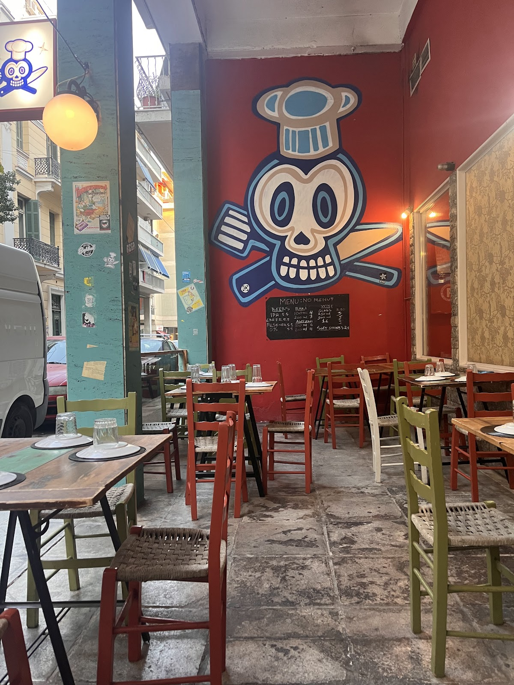
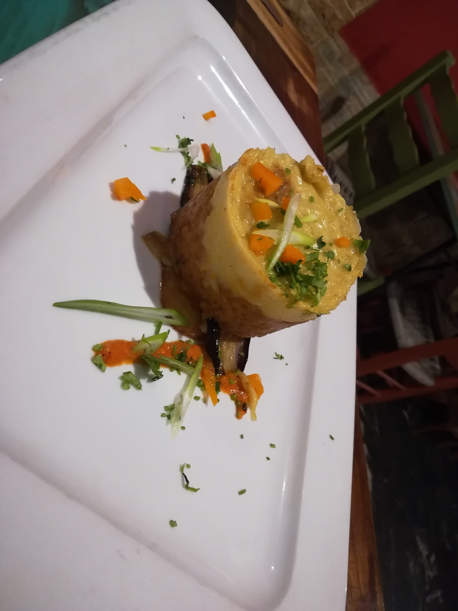
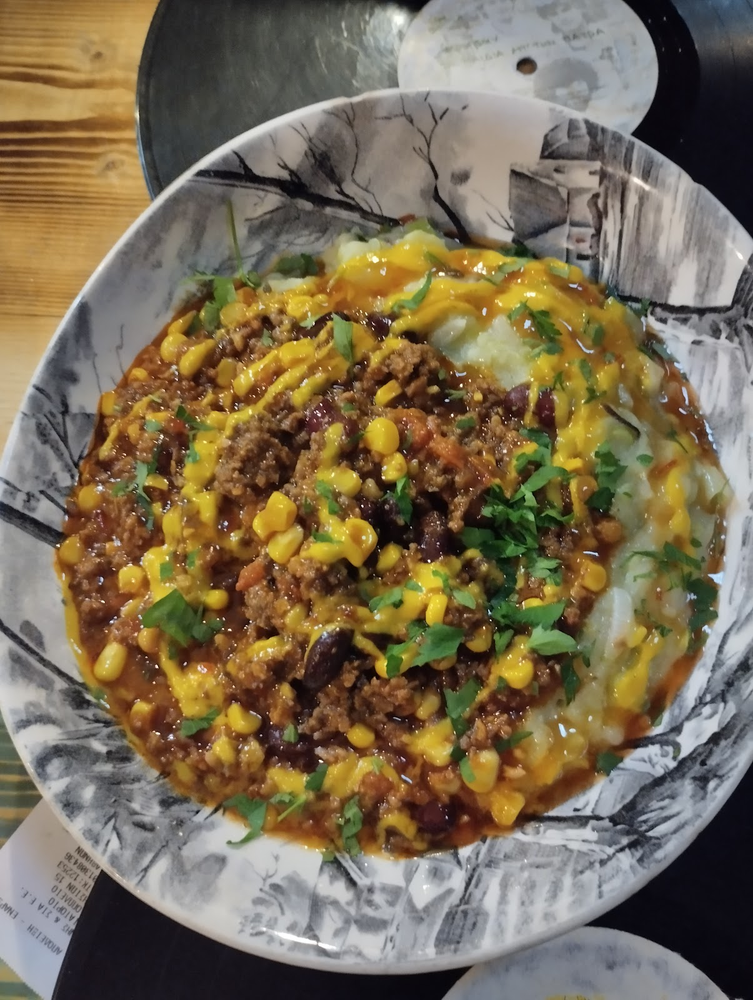
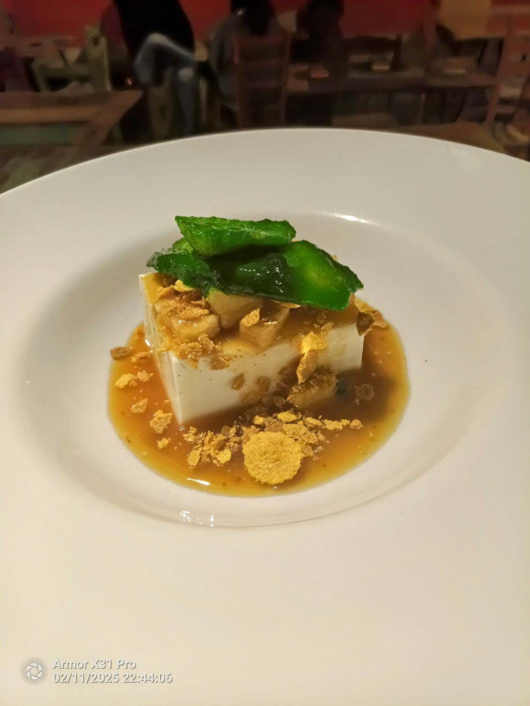
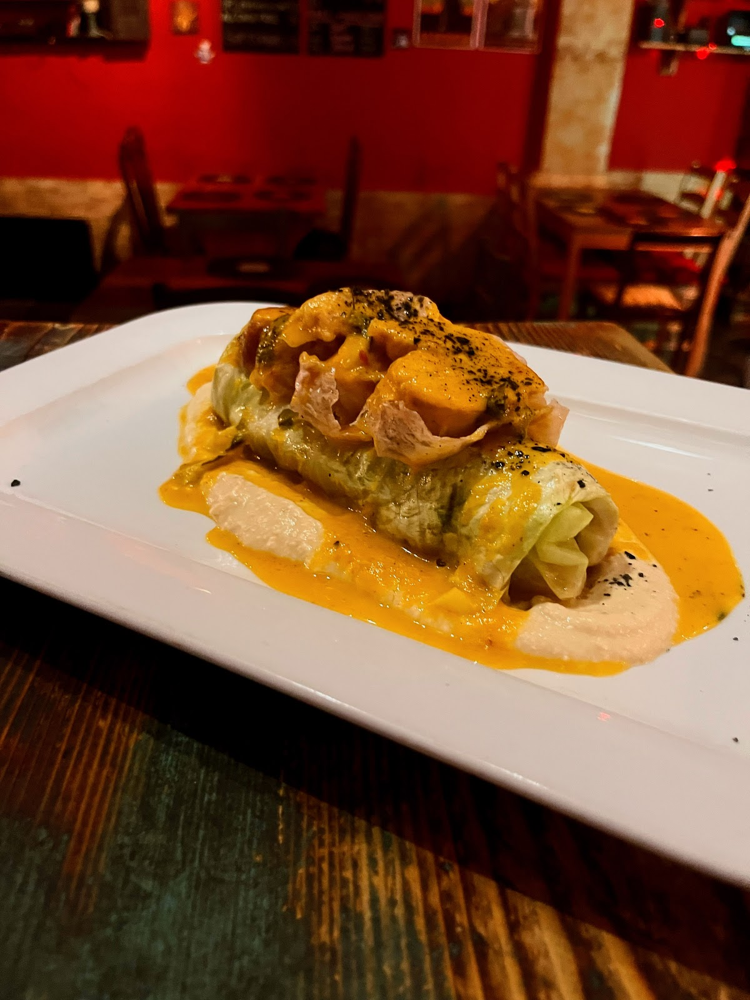
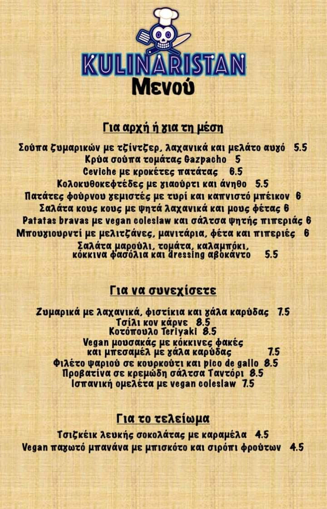
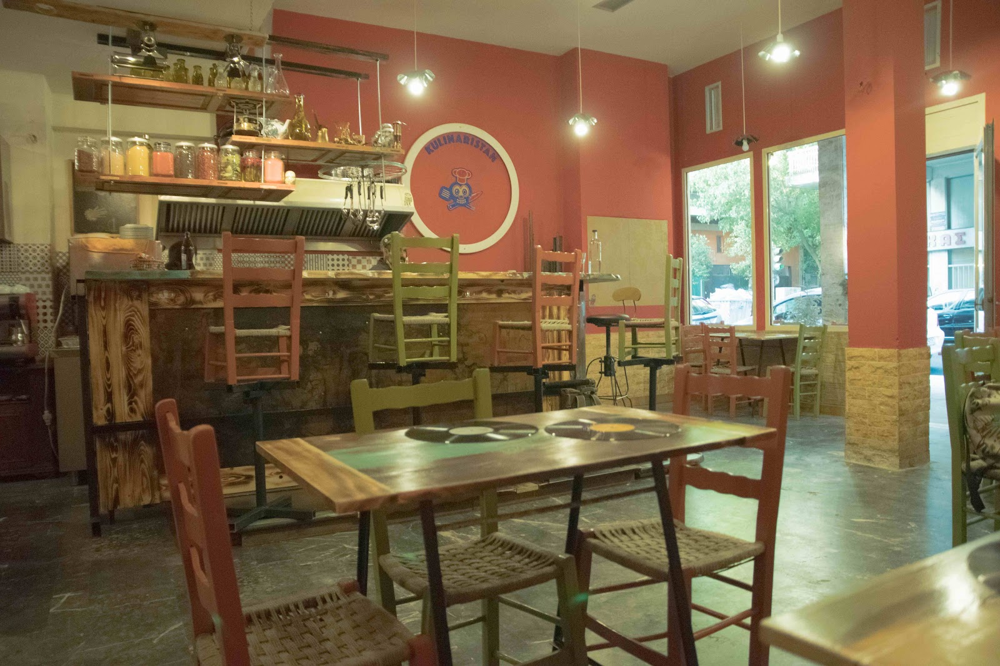
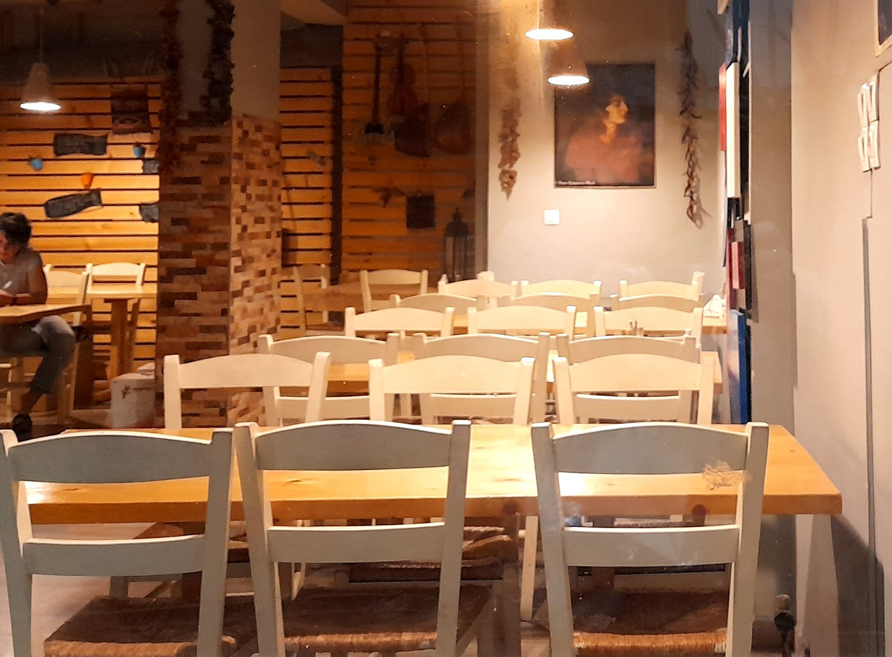

Πλατεία Αμερικής · Μοσχονησίων 15Amerikis Square · Moschonision 15
Ένα μενού σε τρεις πράξεις — κουζίνα από όλο τον κόσμο, σε μία από τις πιο πολυπολιτισμικές γειτονιές της Αθήνας.A menu in three acts — cooking from all over the world, in one of the most multicultural neighbourhoods of Athens.
Το Kulinaristan άνοιξε σε μια δύσκολη χρονιά, σε μια γειτονιά όπου συνυπάρχουν δεκάδες κουζίνες. Από εκεί κρατάει τη λογική του: ένα μενού που ταξιδεύει, χωρίς να ανήκει πουθενά — Ελλάδα, Ισπανία, Μεξικό, Ιαπωνία και Ινδία στο ίδιο τραπέζι.Kulinaristan opened in a hard year, in a neighbourhood where dozens of kitchens live side by side. That is where its logic comes from: a menu that travels and belongs nowhere in particular — Greece, Spain, Mexico, Japan and India at the same table.
Ο χώρος είναι μικρός και ζεστός, με κόκκινους τοίχους και το σήμα του μαγαζιού — ένας μάγειρας με σκούφο και δύο διασταυρωμένα εργαλεία — ζωγραφισμένο στην πρόσοψη.The room is small and warm, with red walls and the house emblem — a chef in a toque with two crossed tools — painted on the façade.








Το Kulinaristan δεν είναι απλά ένα εστιατόριο. Είναι μια ολόκληρη εμπειρία από όλες τις απόψεις: από άποψη χώρου, εξυπηρέτησης, ατμόσφαιρας.
Μασαμπούκα για οκτώ, βραδάκι Κυριακής. Καταπληκτικό το όλο κόνσεπτ, κάθεσαι σαν τον σατράπη και σου φέρνουν φαγητό.
Εξαιρετικό μαγαζί που προτείνει κάτι διαφορετικό! Απόλαυσα τα πάντα.
| ΔευτέραMonday | ΚλειστάClosed |
| ΤρίτηTuesday | 19:00–00:30 |
| ΤετάρτηWednesday | 19:00–00:30 |
| ΠέμπτηThursday | 19:00–00:30 |
| ΠαρασκευήFriday | 19:00–00:30 |
| ΣάββατοSaturday | 19:00–00:30 |
| ΚυριακήSunday | ΚλειστάClosed |
Μοσχονησίων 15, Αθήνα 112 52
Πλατεία Αμερικής — δύο στενά από το μετρόAmerikis Square — two streets from the metro
+30 698 732 3044